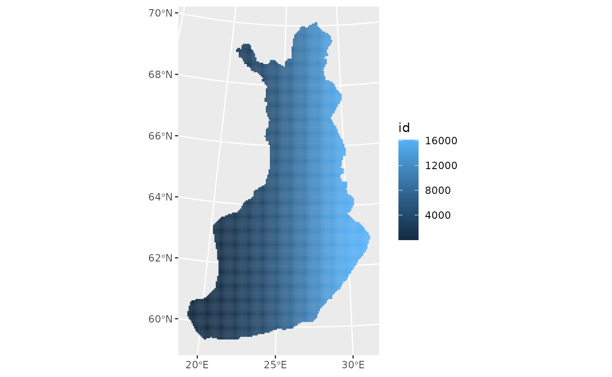

Welcome to the course “Appelied Spatial Data Analysis and Research” course details: https://opas.peppi.uef.fi/en/course/YH00EM30/135183?period=2025-2026
############################################ AVOIMEN DATAN MALLINTAMINEN: PAAVO
#install.packages("purrr")
#install.packages("sf")
#install.packages("tmap")
#install.packages("httr")
#install.packages("data.table")
#install.packages("ows4R")
#options(pckgType="binary")
library(dplyr)
#>
#> Attaching package: 'dplyr'
#> The following objects are masked from 'package:stats':
#>
#> filter, lag
#> The following objects are masked from 'package:base':
#>
#> intersect, setdiff, setequal, union
library(purrr)
library(sf)
#> Linking to GEOS 3.12.1, GDAL 3.8.4, PROJ 9.4.0; sf_use_s2() is TRUE
library(httr)
library(data.table)
#>
#> Attaching package: 'data.table'
#> The following object is masked from 'package:purrr':
#>
#> transpose
#> The following objects are masked from 'package:dplyr':
#>
#> between, first, last
library(ows4R)
#> Loading ISO 19139 XML schemas...
#> Loading ISO 19115-3 XML schemas...
#> Loading ISO 19139 codelists...
library(ggplot2)
### download data
vayla<-"https://geo.stat.fi/geoserver/tilastointialueet/wfs"
url <-list(hostname ="geo.stat.fi/geoserver/tilastointialueet/wfs",
scheme ="https",
query =list(service ="WFS",
version ="2.0.0",
typename ="GetCapabilities"))%>%
setattr("class","url")
request <-build_url(url)
vayla_client <- WFSClient$new(vayla,
serviceVersion = "2.0.0")
vayla_client$getFeatureTypes(pretty = TRUE) # näyttää mahdollisesti haettavat tiedot
#> name
#> 1 tilastointialueet:avi1000k
#> 2 tilastointialueet:avi4500k
#> 3 tilastointialueet:avi1000k_2013
#> 4 tilastointialueet:avi4500k_2013
#> 5 tilastointialueet:avi1000k_2014
#> 6 tilastointialueet:avi4500k_2014
#> 7 tilastointialueet:avi1000k_2015
#> 8 tilastointialueet:avi4500k_2015
#> 9 tilastointialueet:avi1000k_2016
#> 10 tilastointialueet:avi4500k_2016
#> 11 tilastointialueet:avi1000k_2017
#> 12 tilastointialueet:avi4500k_2017
#> 13 tilastointialueet:avi1000k_2018
#> 14 tilastointialueet:avi4500k_2018
#> 15 tilastointialueet:avi1000k_2019
#> 16 tilastointialueet:avi4500k_2019
#> 17 tilastointialueet:avi1000k_2020
#> 18 tilastointialueet:avi4500k_2020
#> 19 tilastointialueet:avi1000k_2021
#> 20 tilastointialueet:avi4500k_2021
#> 21 tilastointialueet:avi1000k_2022
#> 22 tilastointialueet:avi4500k_2022
#> 23 tilastointialueet:avi1000k_2023
#> 24 tilastointialueet:avi4500k_2023
#> 25 tilastointialueet:avi1000k_2024
#> 26 tilastointialueet:avi4500k_2024
#> 27 tilastointialueet:avi1000k_2025
#> 28 tilastointialueet:avi4500k_2025
#> 29 tilastointialueet:ely1000k
#> 30 tilastointialueet:ely4500k
#> 31 tilastointialueet:ely1000k_2013
#> 32 tilastointialueet:ely4500k_2013
#> 33 tilastointialueet:ely1000k_2014
#> 34 tilastointialueet:ely4500k_2014
#> 35 tilastointialueet:ely1000k_2015
#> 36 tilastointialueet:ely4500k_2015
#> 37 tilastointialueet:ely1000k_2016
#> 38 tilastointialueet:ely4500k_2016
#> 39 tilastointialueet:ely1000k_2017
#> 40 tilastointialueet:ely4500k_2017
#> 41 tilastointialueet:ely1000k_2018
#> 42 tilastointialueet:ely4500k_2018
#> 43 tilastointialueet:ely1000k_2019
#> 44 tilastointialueet:ely4500k_2019
#> 45 tilastointialueet:ely1000k_2020
#> 46 tilastointialueet:ely4500k_2020
#> 47 tilastointialueet:ely1000k_2021
#> 48 tilastointialueet:ely4500k_2021
#> 49 tilastointialueet:ely1000k_2022
#> 50 tilastointialueet:ely4500k_2022
#> 51 tilastointialueet:ely1000k_2023
#> 52 tilastointialueet:ely4500k_2023
#> 53 tilastointialueet:ely1000k_2024
#> 54 tilastointialueet:ely4500k_2024
#> 55 tilastointialueet:ely1000k_2025
#> 56 tilastointialueet:ely4500k_2025
#> 57 tilastointialueet:elinvoimakeskus1000k
#> 58 tilastointialueet:elinvoimakeskus4500k
#> 59 tilastointialueet:elinvoimakeskus1000k_2026
#> 60 tilastointialueet:elinvoimakeskus4500k_2026
#> 61 tilastointialueet:hyvinvointialue1000k
#> 62 tilastointialueet:hyvinvointialue4500k
#> 63 tilastointialueet:hyvinvointialue1000k_2022
#> 64 tilastointialueet:hyvinvointialue4500k_2022
#> 65 tilastointialueet:hyvinvointialue1000k_2023
#> 66 tilastointialueet:hyvinvointialue4500k_2023
#> 67 tilastointialueet:hyvinvointialue1000k_2024
#> 68 tilastointialueet:hyvinvointialue4500k_2024
#> 69 tilastointialueet:hyvinvointialue1000k_2025
#> 70 tilastointialueet:hyvinvointialue4500k_2025
#> 71 tilastointialueet:hyvinvointialue1000k_2026
#> 72 tilastointialueet:hyvinvointialue4500k_2026
#> 73 tilastointialueet:kunta1000k
#> 74 tilastointialueet:kunta4500k
#> 75 tilastointialueet:kunta1000k_2013
#> 76 tilastointialueet:kunta4500k_2013
#> 77 tilastointialueet:kunta1000k_2014
#> 78 tilastointialueet:kunta4500k_2014
#> 79 tilastointialueet:kunta1000k_2015
#> 80 tilastointialueet:kunta4500k_2015
#> 81 tilastointialueet:kunta1000k_2016
#> 82 tilastointialueet:kunta4500k_2016
#> 83 tilastointialueet:kunta1000k_2017
#> 84 tilastointialueet:kunta4500k_2017
#> 85 tilastointialueet:kunta1000k_2018
#> 86 tilastointialueet:kunta4500k_2018
#> 87 tilastointialueet:kunta1000k_2019
#> 88 tilastointialueet:kunta4500k_2019
#> 89 tilastointialueet:kunta1000k_2020
#> 90 tilastointialueet:kunta4500k_2020
#> 91 tilastointialueet:kunta1000k_2021
#> 92 tilastointialueet:kunta4500k_2021
#> 93 tilastointialueet:kunta1000k_2022
#> 94 tilastointialueet:kunta4500k_2022
#> 95 tilastointialueet:kunta1000k_2023
#> 96 tilastointialueet:kunta4500k_2023
#> 97 tilastointialueet:kunta1000k_2024
#> 98 tilastointialueet:kunta4500k_2024
#> 99 tilastointialueet:kunta1000k_2025
#> 100 tilastointialueet:kunta4500k_2025
#> 101 tilastointialueet:kunta1000k_2026
#> 102 tilastointialueet:kunta4500k_2026
#> 103 tilastointialueet:maakunta1000k
#> 104 tilastointialueet:maakunta4500k
#> 105 tilastointialueet:maakunta1000k_2013
#> 106 tilastointialueet:maakunta4500k_2013
#> 107 tilastointialueet:maakunta1000k_2014
#> 108 tilastointialueet:maakunta4500k_2014
#> 109 tilastointialueet:maakunta1000k_2015
#> 110 tilastointialueet:maakunta4500k_2015
#> 111 tilastointialueet:maakunta1000k_2016
#> 112 tilastointialueet:maakunta4500k_2016
#> 113 tilastointialueet:maakunta1000k_2017
#> 114 tilastointialueet:maakunta4500k_2017
#> 115 tilastointialueet:maakunta1000k_2018
#> 116 tilastointialueet:maakunta4500k_2018
#> 117 tilastointialueet:maakunta1000k_2019
#> 118 tilastointialueet:maakunta4500k_2019
#> 119 tilastointialueet:maakunta1000k_2020
#> 120 tilastointialueet:maakunta4500k_2020
#> 121 tilastointialueet:maakunta1000k_2021
#> 122 tilastointialueet:maakunta4500k_2021
#> 123 tilastointialueet:maakunta1000k_2022
#> 124 tilastointialueet:maakunta4500k_2022
#> 125 tilastointialueet:maakunta1000k_2023
#> 126 tilastointialueet:maakunta4500k_2023
#> 127 tilastointialueet:maakunta1000k_2024
#> 128 tilastointialueet:maakunta4500k_2024
#> 129 tilastointialueet:maakunta1000k_2025
#> 130 tilastointialueet:maakunta4500k_2025
#> 131 tilastointialueet:maakunta1000k_2026
#> 132 tilastointialueet:maakunta4500k_2026
#> 133 tilastointialueet:seutukunta1000k
#> 134 tilastointialueet:seutukunta4500k
#> 135 tilastointialueet:seutukunta1000k_2013
#> 136 tilastointialueet:seutukunta4500k_2013
#> 137 tilastointialueet:seutukunta1000k_2014
#> 138 tilastointialueet:seutukunta4500k_2014
#> 139 tilastointialueet:seutukunta1000k_2015
#> 140 tilastointialueet:seutukunta4500k_2015
#> 141 tilastointialueet:seutukunta1000k_2016
#> 142 tilastointialueet:seutukunta4500k_2016
#> 143 tilastointialueet:seutukunta1000k_2017
#> 144 tilastointialueet:seutukunta4500k_2017
#> 145 tilastointialueet:seutukunta1000k_2018
#> 146 tilastointialueet:seutukunta4500k_2018
#> 147 tilastointialueet:seutukunta1000k_2019
#> 148 tilastointialueet:seutukunta4500k_2019
#> 149 tilastointialueet:seutukunta1000k_2020
#> 150 tilastointialueet:seutukunta4500k_2020
#> 151 tilastointialueet:seutukunta1000k_2021
#> 152 tilastointialueet:seutukunta4500k_2021
#> 153 tilastointialueet:seutukunta1000k_2022
#> 154 tilastointialueet:seutukunta4500k_2022
#> 155 tilastointialueet:seutukunta1000k_2023
#> 156 tilastointialueet:seutukunta4500k_2023
#> 157 tilastointialueet:seutukunta1000k_2024
#> 158 tilastointialueet:seutukunta4500k_2024
#> 159 tilastointialueet:seutukunta1000k_2025
#> 160 tilastointialueet:seutukunta4500k_2025
#> 161 tilastointialueet:seutukunta1000k_2026
#> 162 tilastointialueet:seutukunta4500k_2026
#> 163 tilastointialueet:suuralue1000k
#> 164 tilastointialueet:suuralue4500k
#> 165 tilastointialueet:suuralue1000k_2013
#> 166 tilastointialueet:suuralue4500k_2013
#> 167 tilastointialueet:suuralue1000k_2014
#> 168 tilastointialueet:suuralue4500k_2014
#> 169 tilastointialueet:suuralue1000k_2015
#> 170 tilastointialueet:suuralue4500k_2015
#> 171 tilastointialueet:suuralue1000k_2016
#> 172 tilastointialueet:suuralue4500k_2016
#> 173 tilastointialueet:suuralue1000k_2017
#> 174 tilastointialueet:suuralue4500k_2017
#> 175 tilastointialueet:suuralue1000k_2018
#> 176 tilastointialueet:suuralue4500k_2018
#> 177 tilastointialueet:suuralue1000k_2019
#> 178 tilastointialueet:suuralue4500k_2019
#> 179 tilastointialueet:suuralue1000k_2020
#> 180 tilastointialueet:suuralue4500k_2020
#> 181 tilastointialueet:suuralue1000k_2021
#> 182 tilastointialueet:suuralue4500k_2021
#> 183 tilastointialueet:suuralue1000k_2022
#> 184 tilastointialueet:suuralue4500k_2022
#> 185 tilastointialueet:suuralue1000k_2023
#> 186 tilastointialueet:suuralue4500k_2023
#> 187 tilastointialueet:suuralue1000k_2024
#> 188 tilastointialueet:suuralue4500k_2024
#> 189 tilastointialueet:suuralue1000k_2025
#> 190 tilastointialueet:suuralue4500k_2025
#> 191 tilastointialueet:suuralue1000k_2026
#> 192 tilastointialueet:suuralue4500k_2026
#> 193 tilastointialueet:hila1km_linkki
#> 194 tilastointialueet:hila1km
#> 195 tilastointialueet:hila250m_linkki
#> 196 tilastointialueet:hila5km_linkki
#> 197 tilastointialueet:hila5km
#> 198 tilastointialueet:tyossakayntialue1000k
#> 199 tilastointialueet:tyossakayntialue4500k
#> 200 tilastointialueet:tyossakayntialue_1000k_2019
#> 201 tilastointialueet:tyossakayntialue_4500k_2019
#> 202 tilastointialueet:tyossakayntialue1000k_2020
#> 203 tilastointialueet:tyossakayntialue4500k_2020
#> 204 tilastointialueet:tyossakayntialue1000k_2021
#> 205 tilastointialueet:tyossakayntialue4500k_2021
#> 206 tilastointialueet:tyossakayntialue1000k_2022
#> 207 tilastointialueet:tyossakayntialue4500k_2022
#> 208 tilastointialueet:tyossakayntialue1000k_2023
#> 209 tilastointialueet:tyossakayntialue4500k_2023
#> 210 tilastointialueet:vaalipiiri1000k
#> 211 tilastointialueet:vaalipiiri4500k
#> 212 tilastointialueet:vaalipiiri1000k_2019
#> 213 tilastointialueet:vaalipiiri4500k_2019
#> 214 tilastointialueet:vaalipiiri1000k_2020
#> 215 tilastointialueet:vaalipiiri4500k_2020
#> 216 tilastointialueet:vaalipiiri1000k_2021
#> 217 tilastointialueet:vaalipiiri4500k_2021
#> 218 tilastointialueet:vaalipiiri1000k_2022
#> 219 tilastointialueet:vaalipiiri4500k_2022
#> 220 tilastointialueet:vaalipiiri1000k_2023
#> 221 tilastointialueet:vaalipiiri4500k_2023
#> 222 tilastointialueet:vaalipiiri1000k_2024
#> 223 tilastointialueet:vaalipiiri4500k_2024
#> 224 tilastointialueet:vaalipiiri1000k_2025
#> 225 tilastointialueet:vaalipiiri4500k_2025
#> 226 tilastointialueet:vaalipiiri1000k_2026
#> 227 tilastointialueet:vaalipiiri4500k_2026
#> title
#> 1 AVI-alueet (1:1 000 000)
#> 2 AVI-alueet (1:4 500 000)
#> 3 AVI-alueet 2013 (1:1 000 000)
#> 4 AVI-alueet 2013 (1:4 500 000)
#> 5 AVI-alueet 2014 (1:1 000 000)
#> 6 AVI-alueet 2014 (1:4 500 000)
#> 7 AVI-alueet 2015 (1:1 000 000)
#> 8 AVI-alueet 2015 (1:4 500 000)
#> 9 AVI-alueet 2016 (1:1 000 000)
#> 10 AVI-alueet 2016 (1:4 500 000)
#> 11 AVI-alueet 2017 (1:1 000 000)
#> 12 AVI-alueet 2017 (1:4 500 000)
#> 13 AVI-alueet 2018 (1:1 000 000)
#> 14 AVI-alueet 2018 (1:4 500 000)
#> 15 AVI-alueet 2019 (1:1 000 000)
#> 16 AVI-alueet 2019 (1:4 500 000)
#> 17 AVI-alueet 2020 (1:1 000 000)
#> 18 AVI-alueet 2020 (1:4 500 000)
#> 19 AVI-alueet 2021 (1:1 000 000)
#> 20 AVI-alueet 2021 (1:4 500 000)
#> 21 AVI-alueet 2022 (1:1 000 000)
#> 22 AVI-alueet 2022 (1:4 500 000)
#> 23 AVI-alueet 2023 (1:1 000 000)
#> 24 AVI-alueet 2023 (1:4 500 000)
#> 25 AVI-alueet 2024 (1:1 000 000)
#> 26 AVI-alueet 2024 (1:4 500 000)
#> 27 AVI-alueet 2025 (1:1 000 000)
#> 28 AVI-alueet 2025 (1:4 500 000)
#> 29 ELY-alueet (1:1 000 000)
#> 30 ELY-alueet (1:4 500 000)
#> 31 ELY-alueet 2013 (1:1 000 000)
#> 32 ELY-alueet 2013 (1:4 500 000)
#> 33 ELY-alueet 2014 (1:1 000 000)
#> 34 ELY-alueet 2014 (1:4 500 000)
#> 35 ELY-alueet 2015 (1:1 000 000)
#> 36 ELY-alueet 2015 (1:4 500 000)
#> 37 ELY-alueet 2016 (1:1 000 000)
#> 38 ELY-alueet 2016 (1:4 500 000)
#> 39 ELY-alueet 2017 (1:1 000 000)
#> 40 ELY-alueet 2017 (1:4 500 000)
#> 41 ELY-alueet 2018 (1:1 000 000)
#> 42 ELY-alueet 2018 (1:4 500 000)
#> 43 ELY-alueet 2019 (1:1 000 000)
#> 44 ELY-alueet 2019 (1:4 500 000)
#> 45 ELY-alueet 2020 (1:1 000 000)
#> 46 ELY-alueet 2020 (1:4 500 000)
#> 47 ELY-alueet 2021 (1:1 000 000)
#> 48 ELY-alueet 2021 (1:4 500 000)
#> 49 ELY-alueet 2022 (1:1 000 000)
#> 50 ELY-alueet 2022 (1:4 500 000)
#> 51 ELY-alueet 2023 (1:1 000 000)
#> 52 ELY-alueet 2023 (1:4 500 000)
#> 53 ELY-alueet 2024 (1:1 000 000)
#> 54 ELY-alueet 2024 (1:4 500 000)
#> 55 ELY-alueet 2025 (1:1 000 000)
#> 56 ELY-alueet 2025 (1:4 500 000)
#> 57 Elinvoimakeskukset (1:1 000 000)
#> 58 Elinvoimakeskukset (1:4 500 000)
#> 59 Elinvoimakeskukset 2026 (1:1 000 000)
#> 60 Elinvoimakeskukset 2026 (1:4 500 000)
#> 61 Hyvinvointialueet (1:1 000 000)
#> 62 Hyvinvointialueet (1:4 500 000)
#> 63 Hyvinvointialueet 2022 (1:1 000 000)
#> 64 Hyvinvointialueet 2022 (1:4 500 000)
#> 65 Hyvinvointialueet 2023 (1:1 000 000)
#> 66 Hyvinvointialueet 2023 (1:4 500 000)
#> 67 Hyvinvointialueet 2024 (1:1 000 000)
#> 68 Hyvinvointialueet 2024 (1:4 500 000)
#> 69 Hyvinvointialueet 2025 (1:1 000 000)
#> 70 Hyvinvointialueet 2025 (1:4 500 000)
#> 71 Hyvinvointialueet 2026 (1:1 000 000)
#> 72 Hyvinvointialueet 2026 (1:4 500 000)
#> 73 Kunnat (1:1 000 000)
#> 74 Kunnat (1:4 500 000)
#> 75 Kunnat 2013 (1:1 000 000)
#> 76 Kunnat 2013 (1:4 500 000)
#> 77 Kunnat 2014 (1:1 000 000)
#> 78 Kunnat 2014 (1:4 500 000)
#> 79 Kunnat 2015 (1:1 000 000)
#> 80 Kunnat 2015 (1:4 500 000)
#> 81 Kunnat 2016 (1:1 000 000)
#> 82 Kunnat 2016 (1:4 500 000)
#> 83 Kunnat 2017 (1:1 000 000)
#> 84 Kunnat 2017 (1:4 500 000)
#> 85 Kunnat 2018 (1:1 000 000)
#> 86 Kunnat 2018 (1:4 500 000)
#> 87 Kunnat 2019 (1:1 000 000)
#> 88 Kunnat 2019 (1:4 500 000)
#> 89 Kunnat 2020 (1:1 000 000)
#> 90 Kunnat 2020 (1:4 500 000)
#> 91 Kunnat 2021 (1:1 000 000)
#> 92 Kunnat 2021 (1:4 500 000)
#> 93 Kunnat 2022 (1:1 000 000)
#> 94 Kunnat 2022 (1:4 500 000)
#> 95 Kunnat 2023 (1:1 000 000)
#> 96 Kunnat 2023 (1:4 500 000)
#> 97 Kunnat 2024 (1:1 000 000)
#> 98 Kunnat 2024 (1:4 500 000)
#> 99 Kunnat 2025 (1:1 000 000)
#> 100 Kunnat 2025 (1:4 500 000)
#> 101 Kunnat 2026 (1:1 000 000)
#> 102 Kunnat 2026 (1:4 500 000)
#> 103 Maakunnat (1:1 000 000)
#> 104 Maakunnat (1:4 500 000)
#> 105 Maakunnat 2013 (1:1 000 000)
#> 106 Maakunnat 2013 (1:4 500 000)
#> 107 Maakunnat 2014 (1:1 000 000)
#> 108 Maakunnat 2014 (1:4 500 000)
#> 109 Maakunnat 2015 (1:1 000 000)
#> 110 Maakunnat 2015 (1:4 500 000)
#> 111 Maakunnat 2016 (1:1 000 000)
#> 112 Maakunnat 2016 (1:4 500 000)
#> 113 Maakunnat 2017 (1:1 000 000)
#> 114 Maakunnat 2017 (1:4 500 000)
#> 115 Maakunnat 2018 (1:1 000 000)
#> 116 Maakunnat 2018 (1:4 500 000)
#> 117 Maakunnat 2019 (1:1 000 000)
#> 118 Maakunnat 2019 (1:4 500 000)
#> 119 Maakunnat 2020 (1:1 000 000)
#> 120 Maakunnat 2020 (1:4 500 000)
#> 121 Maakunnat 2021 (1:1 000 000)
#> 122 Maakunnat 2021 (1:4 500 000)
#> 123 Maakunnat 2022 (1:1 000 000)
#> 124 Maakunnat 2022 (1:4 500 000)
#> 125 Maakunnat 2023 (1:1 000 000)
#> 126 Maakunnat 2023 (1:4 500 000)
#> 127 Maakunnat 2024 (1:1 000 000)
#> 128 Maakunnat 2024 (1:4 500 000)
#> 129 Maakunnat 2025 (1:1 000 000)
#> 130 Maakunnat 2025 (1:4 500 000)
#> 131 Maakunnat 2026 (1:1 000 000)
#> 132 Maakunnat 2026 (1:4 500 000)
#> 133 Seutukunnat (1:1 000 000)
#> 134 Seutukunnat (1:4 500 000)
#> 135 Seutukunnat 2013 (1:1 000 000)
#> 136 Seutukunnat 2013 (1:4 500 000)
#> 137 Seutukunnat 2014 (1:1 000 000)
#> 138 Seutukunnat 2014 (1:4 500 000)
#> 139 Seutukunnat 2015 (1:1 000 000)
#> 140 Seutukunnat 2015 (1:4 500 000)
#> 141 Seutukunnat 2016 (1:1 000 000)
#> 142 Seutukunnat 2016 (1:4 500 000)
#> 143 Seutukunnat 2017 (1:1 000 000)
#> 144 Seutukunnat 2017 (1:4 500 000)
#> 145 Seutukunnat 2018 (1:1 000 000)
#> 146 Seutukunnat 2018 (1:4 500 000)
#> 147 Seutukunnat 2019 (1:1 000 000)
#> 148 Seutukunnat 2019 (1:4 500 000)
#> 149 Seutukunnat 2020 (1:1 000 000)
#> 150 Seutukunnat 2020 (1:4 500 000)
#> 151 Seutukunnat 2021 (1:1 000 000)
#> 152 Seutukunnat 2021 (1:4 500 000)
#> 153 Seutukunnat 2022 (1:1 000 000)
#> 154 Seutukunnat 2022 (1:4 500 000)
#> 155 Seutukunnat 2023 (1:1 000 000)
#> 156 Seutukunnat 2023 (1:4 500 000)
#> 157 Seutukunnat 2024 (1:1 000 000)
#> 158 Seutukunnat 2024 (1:4 500 000)
#> 159 Seutukunnat 2025 (1:1 000 000)
#> 160 Seutukunnat 2025 (1:4 500 000)
#> 161 Seutukunnat 2026 (1:1 000 000)
#> 162 Seutukunnat 2026 (1:4 500 000)
#> 163 Suuralueet (1:1 000 000)
#> 164 Suuralueet (1:4 500 000)
#> 165 Suuralueet 2013 (1:1 000 000)
#> 166 Suuralueet 2013 (1:4 500 000)
#> 167 Suuralueet 2014 (1:1 000 000)
#> 168 Suuralueet 2014 (1:4 500 000)
#> 169 Suuralueet 2015 (1:1 000 000)
#> 170 Suuralueet 2015 (1:4 500 000)
#> 171 Suuralueet 2016 (1:1 000 000)
#> 172 Suuralueet 2016 (1:4 500 000)
#> 173 Suuralueet 2017 (1:1 000 000)
#> 174 Suuralueet 2017 (1:4 500 000)
#> 175 Suuralueet 2018 (1:1 000 000)
#> 176 Suuralueet 2018 (1:4 500 000)
#> 177 Suuralueet 2019 (1:1 000 000)
#> 178 Suuralueet 2019 (1:4 500 000)
#> 179 Suuralueet 2020 (1:1 000 000)
#> 180 Suuralueet 2020 (1:4 500 000)
#> 181 Suuralueet 2021 (1:1 000 000)
#> 182 Suuralueet 2021 (1:4 500 000)
#> 183 Suuralueet 2022 (1:1 000 000)
#> 184 Suuralueet 2022 (1:4 500 000)
#> 185 Suuralueet 2023 (1:1 000 000)
#> 186 Suuralueet 2023 (1:4 500 000)
#> 187 Suuralueet 2024 (1:1 000 000)
#> 188 Suuralueet 2024 (1:4 500 000)
#> 189 Suuralueet 2025 (1:1 000 000)
#> 190 Suuralueet 2025 (1:4 500 000)
#> 191 Suuralueet 2026 (1:1 000 000)
#> 192 Suuralueet 2026 (1:4 500 000)
#> 193 Tilastoruudukko 1 km - kunta-avain
#> 194 Tilastoruudukko 1 km x 1 km
#> 195 Tilastoruudukko 250 m - kunta-avain
#> 196 Tilastoruudukko 5 km - kunta-avain
#> 197 Tilastoruudukko 5 km x 5 km
#> 198 Työssäkäyntialueet (1:1 000 000)
#> 199 Työssäkäyntialueet (1:4 500 000)
#> 200 Työssäkäyntialueet 2019 (1:1 000 000)
#> 201 Työssäkäyntialueet 2019 (1:4 500 000)
#> 202 Työssäkäyntialueet 2020 (1:1 000 000)
#> 203 Työssäkäyntialueet 2020 (1:4 500 000)
#> 204 Työssäkäyntialueet 2021 (1:1 000 000)
#> 205 Työssäkäyntialueet 2021 (1:4 500 000)
#> 206 Työssäkäyntialueet 2022 (1:1 000 000)
#> 207 Työssäkäyntialueet 2022 (1:4 500 000)
#> 208 Työssäkäyntialueet 2023 (1:1 000 000)
#> 209 Työssäkäyntialueet 2023 (1:4 500 000)
#> 210 Vaalipiirit (1:1 000 000)
#> 211 Vaalipiirit (1:4 500 000)
#> 212 Vaalipiirit 2019 (1:1 000 000)
#> 213 Vaalipiirit 2019 (1:4 500 000)
#> 214 Vaalipiirit 2020 (1:1 000 000)
#> 215 Vaalipiirit 2020 (1:4 500 000)
#> 216 Vaalipiirit 2021 (1:1 000 000)
#> 217 Vaalipiirit 2021 (1:4 500 000)
#> 218 Vaalipiirit 2022 (1:1 000 000)
#> 219 Vaalipiirit 2022 (1:4 500 000)
#> 220 Vaalipiirit 2023 (1:1 000 000)
#> 221 Vaalipiirit 2023 (1:4 500 000)
#> 222 Vaalipiirit 2024 (1:1 000 000)
#> 223 Vaalipiirit 2024 (1:4 500 000)
#> 224 Vaalipiirit 2025 (1:1 000 000)
#> 225 Vaalipiirit 2025 (1:4 500 000)
#> 226 Vaalipiirit 2026 (1:1 000 000)
#> 227 Vaalipiirit 2026 (1:4 500 000)
url <-list(hostname ="geo.stat.fi/geoserver/tilastointialueet/wfs",
scheme ="https",
query =list(service ="WFS",
version ="2.0.0",
request ="GetFeature",
typename ="tilastointialueet:hila5km",
outputFormat ="json"))%>%
setattr("class","url")
request <-build_url(url)
ruudukko <-st_read(request)
#> Reading layer `OGRGeoJSON' from data source
#> `https://geo.stat.fi/geoserver/tilastointialueet/wfs/?service=WFS&version=2.0.0&request=GetFeature&typename=tilastointialueet%3Ahila5km&outputFormat=json'
#> using driver `GeoJSON'
#> Simple feature collection with 16113 features and 4 fields
#> Geometry type: POLYGON
#> Dimension: XY
#> Bounding box: xmin: 60000 ymin: 6605000 xmax: 735000 ymax: 7780000
#> Projected CRS: ETRS89 / TM35FIN(E,N)
ggplot(ruudukko) +
geom_sf(aes(fill = id), color = NA) 
library(spatialcourseOL)
usethis::use_pkgdown()
#> ✔ Setting active project to
#> "/home/runner/work/spatialcourseOL/spatialcourseOL".
#> ℹ Leaving _pkgdown.yml unchanged.
#> ☐ Edit _pkgdown.yml.